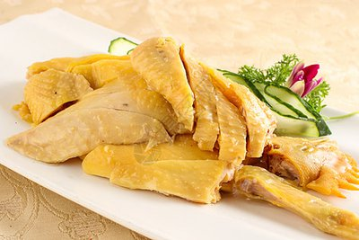

菜品介绍
白切鸡是粤菜中最具代表性的菜肴之一，以其鲜嫩多汁、皮爽肉滑、原汁原味的特点而闻名。这道菜看似简单，实则对火候的掌控要求极高，是检验厨师技艺的重要标准。
正宗的白切鸡要求"骨中带血"，即骨头周围的肉略带粉红色，但这并非真的血水，而是恰到好处的火候表现，确保鸡肉达到最鲜嫩的状态。
烹饪精髓
白切鸡的烹饪精髓在于"浸"而非"煮"。将整鸡放入微沸的水中，然后离火浸泡，利用水的余温将鸡肉慢慢浸熟。 这种方法能够最大程度地保留鸡肉的原汁原味，使鸡肉鲜嫩多汁，皮爽肉滑。
历史背景
白切鸡起源于广东，已有数百年的历史。最初是广东乡村宴席上的常见菜肴，后来逐渐发展成为粤菜的代表作之一。
在广东，有无鸡不成宴的说法，而白切鸡更是宴席上的首选。这道菜体现了粤菜追求食材本味、注重火候掌握的烹饪理念。
制作步骤
1选鸡与处理
选用1-1.5公斤的三黄鸡或清远鸡，宰杀洗净后，去除内脏和杂毛，保持鸡皮完整。
2准备浸鸡水
大锅内放足够的水，加入姜片、葱段和少许盐，烧开后转小火，保持水微沸状态。
3浸鸡
手提鸡头，将整鸡放入热水中浸烫几秒钟后提起，重复三次（这叫"三提三放"），然后整只鸡放入锅中，离火浸泡25-30分钟。
4过冷河
将浸熟的鸡立即放入冰水中浸泡10-15分钟，使鸡皮收缩，达到皮爽肉滑的效果。
5斩件
将鸡捞出沥干水分，斩成适当大小的块，整齐摆放在盘中。
6制作蘸料
将姜葱剁成茸，加入盐和少许鸡油或花生油，搅拌均匀即成经典姜葱蘸料。

食材清单
主料
- 三黄鸡/清远鸡 1只(约1-1.5kg)
配料
- 姜 1大块
- 葱 3-4根
- 冰水 适量
蘸料
- 姜茸 2汤匙
- 葱白茸 1汤匙
- 盐 1茶匙
- 花生油/鸡油 3汤匙
营养信息
* 营养信息为每100克估算值，实际数值可能因食材和烹饪方式有所不同
烹饪技巧
- 选择品质好的鸡是成功的关键，最好选用三黄鸡或清远鸡
- 浸鸡前"三提三放"有助于鸡皮定型，防止破皮
- 浸鸡时火一定要小，水不能大沸，否则鸡肉会变老
- 过冰水是皮爽肉滑的关键步骤，不可省略
- 斩鸡时刀要快，下刀要准，才能保持鸡块完整